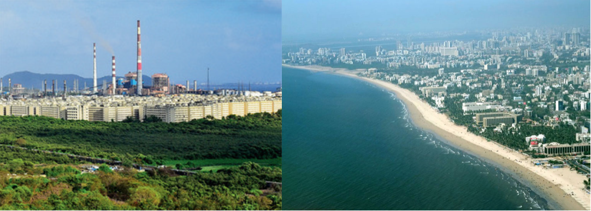
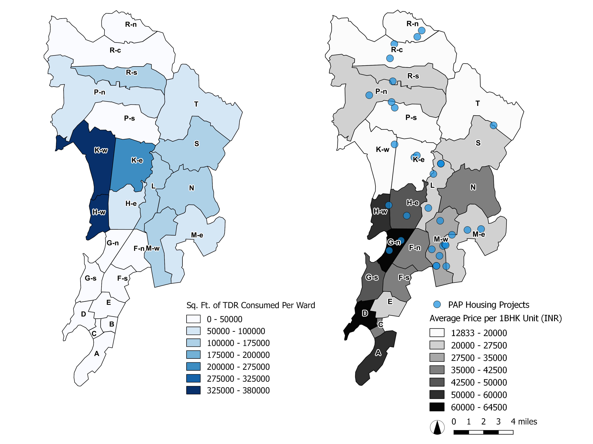
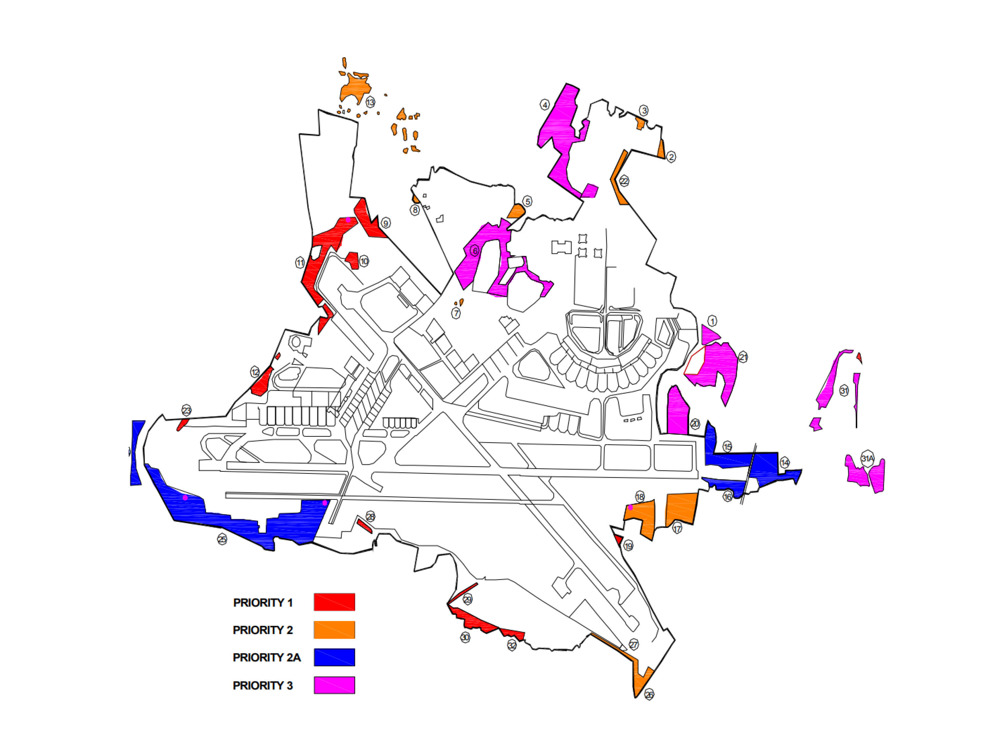

New Sangam Housing Society, a Slum Redevelopment Authority housing project in Mumbai
Source: Zubin Pastakia.
Source: Zubin Pastakia.
Introduction
The idea of this project is to critically examine, in the context of a liberalizing Mumbai, how a specific market-oriented planning policy, Transfer of Development Rights (TDR), has been transformed from a tool for preservation into a substitute for taxes and a tool for the redevelopment of "slums". However, it is important to acknowledge that the labelling of informal settlements as slums is a highly political and contested designation. The remaking of Mumbai into a “World Class City” has required massive investments in infrastructure, the removal of slum-dwellers or their relocation into “formal” housing, and the development of high-cost, high-rise living spaces.1
The government of Maharashtra has facilitated all three using TDR. Rather than funding infrastructure through taxes and building low-income housing of its own accord, the government has used the logic of capital to subcontract the provision of public amenities and accelerate the destruction of areas deemed slums at the same time as it encourages the development of expensive, high-rise housing. This has been politically expedient for politicians and profitable for developers but has increased spatial inequality in Mumbai as well by concentrating the poor displaced from slum redevelopment in low cost areas of the city at the same time as it inflates housing prices in the expensive areas.
Origins of TDR
The Transfer of Development Rights was first conceived in New York City, where a 1916 zoning ordinance permitted the sale of air rights between adjacent lots.2
The intention of this policy was to prevent the redevelopment of historically significant buildings, whose owners might otherwise be inclined to redevelop their properties at a higher density to generate more profit. Instead, those owners could make money by selling the air rights, and that additional height or density could be added on the neighboring lots. The concept was also employed in rural areas in order to incentivize landowners to preserve natural land. By the 1970s TDR had spread to Europe largely to serve the same purpose of preserving natural land and historic buildings.3
In Mumbai the preservation of open land and historically significant buildings was never the goal of TDR; in fact it sought to facilitate the acquisition of private lands deemed necessary for public uses by the government. The Maharashtra Regional Government was the first in India to allow for some form of TDR. In its Development Plan of 1967 and associated Development Control Regulations (DCR’s), the government sought to facilitate the acquisition of private lands for infrastructure projects by allowing the owners of that private land to transfer the right to its development to the rest of their property provided that they give the land up without a problem.4
Thus TDR was originally seen as an effective and important was to incentivize private landowners such as farmers to give up their lands without resistance so that they lands could be used for roads or other public uses.5
However, it was in the 1980s with the rise of the tertiary sectors of finance, insurance, real estate, and other service industries in Mumbai that a new use for TDR started to become relevant.
6
These industries as well as the rising middle class that they supported necessitated infrastructural improvements such as roads, schools, and libraries. Thus in 1991, as India enacted a new National Economic Policy that sought to liberalize the economy, Mumbai passed new DCR’s that sought to decongest the island city and foster the development of essential public amenities. With the new DCR’s, the government sought to use TDR to involve the private sector directly in the development of public infrastructure and amenities. It allowed developers who would build public amenities such as libraries or schools themselves to utilize the development of an equivalent amount of land elsewhere. Thus TDR was used as a public policy tool in India for the first time to facilitate the privatization of the public provision of services, and it effectively created building space in the city. Developer saw the provision of public services as an investment that would allow them to build to higher densities than established zoning would normally allowed. In order to prevent overbuilding of the already pricy island city, the DCR’s stipulated that TDR could only be used north of where it was generated and outside of the island city.7
This one restriction on the use of TDR in Mumbai, though represents a dramatic shift from its regulation in the US. There, TDR is generated on a specific plot and designated for usage on another specific plot or within a specific zone near where it was generated. By comparison TDR in Mumbai can be used almost anywhere. This has enabled the transformation of TDR, according to Navtej Nainan, into a “parallel legal currency”.8
Base map created by Griffin Gill and is used throughout the project. It was georeferenced from ward and slum maps obtained from the SRA website.
Source: Griffin Gill. Data Source: Slum Redevelopment Authority, Government of Maharashtra
Source: Griffin Gill. Data Source: Slum Redevelopment Authority, Government of Maharashtra
“World-Class Mumbai”
It is important to note that the changes signaled first by the structural shift of the Mumbai economy towards tertiary sectors in the 1980s, formalized at the national level with the New Economic Policy at the national level and the new Development Control Regulations for Mumbai in 1991, and facilitated by the use of TDR can be described as a project to remake Mumbai into a “world-class” city that is friendly to global capital. It is exemplified by a plan, based on a report by McKinsey and Company, called “Vision Mumbai: Transforming Mumbai into a World Class City” that calls for massive investments in infrastructure as well as the replacement of informal settlements, or ‘slums’, with formalized housing.9
This is a highly political project that has been marked by increasing stratification of wealth in Mumbai and in India as a whole as well as by everyday violences committed against poor people through dispossession. In the context of this transformation of Mumbai into a hub for global capital, the use of a tool such as TDR that functions according to the logic of capital makes sense. TDR instead of Taxes
The reason TDR is such an attractive tool to the government not only in Maharashtra but in cities the world over is because it bears no direct cost to for the public sector but can be used to fund projects meant to benefit the public. Particularly for local governments with a shortage of funding, TDR can seem a very effective tool for the government to utilize. The fiscal burden of Mumbai’s government has an interesting root. A lot of fiscal pressure has come from rent controls dating back to the 1940’s. The Bombay Rents, Hotel Rates, and Lodging House Rates Control Act of 1947 froze rents in Mumbai to their 1940 levels.10
Many buildings rented out at that time have been redeveloped, many landlords informally charge greater than the technically allowed rent, and property values have certainly all increased immensely since that time, but, because property taxes are based on the technically fixed rental rate, revenue from those taxes has grown by almost nothing.11
In the last few decades, therefore, TDR has been framed as a vital tool to propel the changes necessary for the pursuit of a “World-Class” Mumbai. There is an irony to the fact that a policy (TDR) intended to improve the infrastructure of the island city is necessitated by a lack of revenue coming from the island city itself.
That irony, though, can be reframed as entirely unsurprising when considering the political value of the rising middle class vote bank in the island city; particularly if TDR can be leveraged for the construction of infrastructure, it can prove a very expedient tool for politicians who want to avoid raising taxes on those middle class island city residents.
12
The local political pressure against the levying of additional taxes is a constant in most cities and furthermore is part and parcel of the ideology of privatization and liberalization that has taken hold not just in India but in the United States as well. However, this policy of using TDR to fund the construction of vital infrastructure projects instead of levying taxes to fund those same projects in Mumbai is interestingly intertwined with the discourses of modernization and liberalization that have dominated there since the liberalization of 1991.
In the United States much of the pressure to use TDR has come from the retrenchment of the federal government from supporting fiscal needs in urban areas especially since the liberalization of the 1980’s.
13
TDR has been given to encourage private actors to engage in, essentially, a public private partnerships with the government whereby they build a public amenity and in return are granted rights to develop another specific plot of land. Elliott Sclar writes of the sale by the Hudson River Park Trust of one hundred million dollars in air rights over Pier 40 on the west side of Manhattan to a private developer seeking to build an adjacent mixed use complex as one of the most creative utilizations of this financing mechanism.14
The money paid by the developer for the air rights of the public Pier 40 will thus go towards the maintenance of Hudson River Park, meaning that the government has leveraged a specific private developer’s desire to develop on a specific parcel towards the funding of a public amenity. This example shows how TDR is starting to be used very creatively in the US as well to replace financing mechanisms such as the issuing of municipal bonds. It goes to show the lengths to which public authorities and governments must go to finance the maintenance and construction of public infrastructure under a liberalized governmental regime. Engaging the private market is seen as the only way.
This advanced stage implementation of the TDR tool in New York, the place that originally conceived of such a policy tool more than a century ago and that has famously engaged in a pattern of urban development driven by the private market, is not that surprising. In Mumbai, though, this tool that was not even a major part of the policy repertoire of the government before 1991 was introduced as a critical tool for the realization of the new “World-Class” Mumbai. The same liberalization that was reshaping the economy of the city into one based on the tertiary sector sought to reorganize the space of the city to foment the accumulation of capital, and the tool they used to do it was a tool that functioned according to the logic of capital. Furthermore, the government sought to sustain the electoral support of a new middle class in the island city born of the new liberal economy by declining to raise their taxes even to finance the very spatial reorganizations that same liberal economy demanded.
TDR and "Building Boomers"
Left: PAP housing in Mahu.
Source: Mumbai Mirror.
Right: The beach at Juhu, one of the most expensive neighborhoods in Mumbai.
Source: Silicon India Travel.
Source: Mumbai Mirror.
Right: The beach at Juhu, one of the most expensive neighborhoods in Mumbai.
Source: Silicon India Travel.
More than just infrastructure improvements, though, were necessary for the remaking of Mumbai into a “world-class” city; the elimination of slums has also been a priority since the liberalization period began in the early 1990s. Perhaps it should not be a surprise that the TDR tool was also applied to this the goal of eliminating slums and providing housing deemed “formal” and therefore acceptable by the state. The idea that government cannot be an efficient provider of housing and that therefore housing must be reframed as “an economic, and not a social, sector” was by then prevalent around the world.
15
The wielding of development rights as incentives or mandates that developers provide affordable housing is also not new. This is evidenced, at least in the United States, by the consistent decline in the number of public housing units since at least the 1970s and their replacement with affordable housing vouchers and rent controls. In New York the city council has, under Mayor Bill De Blasio, pursued a policy of Mandatory Inclusionary Housing that requires developments in certain zoning districts to include a requisite percentage of housing at a certain percentage below the median income of the city.16
However, the use of TDR tool for the redevelopment of slums represents an application in the Mumbai case that had not been previously tried. The motivations for doing so were equal parts ideological and political, and the results have been an increase in corruption, inefficiency in provision of housing to the poor, spatial segregation, and the threat of undermining the already established goal of decongesting the city and providing proper infrastructure.
The project of destroying slums and rehousing inhabitants in housing deemed appropriate by the state had been undertaken by the local government since at least the 1991 Development Control Regulation changes. Under those regulations, the maximum allowed ratio of total floor space to area of the lot was increased for areas designated as slums. This was to incentivize investors to undertake the construction of free in-situ housing units for slum dwellers to replace their slum dwellings, but the total profit was limited to 25%.
17
In 1995 a new municipal government came to power led by the religious Shiv Sena party, a party that had recognized as early as 1985 the political need to appeal not only to middle class residents of the island city but also to the slum-dwelling populations who formed a large percentage of the overall population of the city.
18
Their government passed legislation in 1996 known as the Slum Redevelopment Scheme (SRS), which was aimed at increasing the rate of replacement of slums by involving private developers. It eliminated a 25% cap on the amount of profit that could be earned by a developer through the redevelopment of a slum, and it authorized the use of TDR as an incentive.19
The legislation allowed a newly created Slum Redevelopment Authority (SRA) to offer TDR certificates for not just the square footage of land that was surrendered for construction of new housing but also for the amount of square footage of building space that was constructed.20
This meant that for every square foot of space built to house people displaced from slums, the city was using its ability to regulate zoning by effectively creating additional square footage of housing and giving it to the developer. The developer could then use the TDR themselves either on that plot or anywhere else in the suburbs of the city, or they could sell it off to the highest bidder. This meant that developers could generate much more TDR through slum development than they ever could through building infrastructure, and the potential profits were limited only by the market rents they could charge or by the overall value of TDR in the marketplace. Thus the SRA legislation is seen as a boon to the developers and builders or “Building Boomers”, as Navtej Nainan refers to them. Real estate market research completed by the group Anand Rathi declares that engagement in slum rehabilitation projects is the most profitable way of acquiring land for developers in Mumbai.21
The use of TDR as an incentive was a clever wielding of legal power on the part of the government. It alone had the power to create the extra floor area and the transfer of it that incentivized the developers, but it still fulfilled the liberal-era conviction that the government itself should not be spending public money to build housing. TDR was thus the essential market tool to ensure the privatization of the replacement of slums. It also served political purposes. It pleased the builders who received the TDR, it furthered the transformation of Mumbai as per the McKinsey plan, and it also avoided alienating the slum-dwellers themselves. In fact, one of the early criticisms of the SRS plan was that slum dwellers would be unwilling to participate in the redevelopment of slums but would instead prefer the upgrading of the already existing housing infrastructure. Mukhija, though, contends that this was in large part not the case but that rather “many slum-dwellers…described the new houses as their dream."
22

Left: The majority of the TDR generated within M ward has been consumed in the more expensive neighborhoods of the west.
Right: The majority of the PAP resettlement projects have been constructed in M ward.
Source: Griffin Gill. Data Sources: Mumbai Property Exchange, Slum Redevelopment Authority.
Right: The majority of the PAP resettlement projects have been constructed in M ward.
Source: Griffin Gill. Data Sources: Mumbai Property Exchange, Slum Redevelopment Authority.
The two main types of redevelopment schemes allowed by the SRA are “in-situ” redevelopments to rehouse slum dwellers in the same location and “PAP” or Project Affected People redevelopments.
23
The “in-situ” schemes are classified under the SRA legislation as 33(10) projects and the “PAP” schemes as 3(11). The “in-situ” schemes are seen as the most profitable for developers because they can acquire slum land in the most profitable parts of the city and utilize the TDR generated on site. PAP schemes, though, are profitable to developers only if they can acquire the land for the tenements cheaply. Therefore, the majority of PAP housing projects under the SRA have been undertaken in locations where the price of land is cheap and easily acquired. The TDR generated can then be utilized in high price neighborhoods at a profit for the developer.
Complicating SRSs’ use of TDR
Navtej Nainan argues that the formerly industrial and therefore very low cost M-east ward on the eastern end of the city has been a preferred site of TDR generation for the building boomers and, furthermore, that it is the site of more than half of the units constructed for housing people displaced by infrastructure projects, or PAPs.24
This is because in M-ward builders can acquire formerly industrial lands cheaply and then cheaply construct townships for the people who were displaced from their settlements in more central locations in the name of progress. The TDR can then be used in places with higher real estate prices, which causes real estate prices in these already high cost areas to rise even further, thus increasing the cost of housing in already exclusive areas of the city that are inaccessible to the poor, areas such as the rich coastal neighborhood of Juhu.25
Thus the effect of the use of TDR to house people is in this circumstance to increase spatial segregation and furthermore to concentrate poor people in isolated, industrial, and generally undesirable portions of the city. Furthermore, thousands of the units that have been constructed for PAPs in industrial parts of M-ward are still laying vacant because displaced people would rather take their chances finding new homes on their own than live in such an undesirable location.26
Three PAP housing projects are located in the Mahul neighborhood according to the SRA website.
Source: Griffin Gill. Data Sources: Mumbai Property Exchange, Google Maps.
Source: Griffin Gill. Data Sources: Mumbai Property Exchange, Google Maps.
While slum dwellers who owned their plots and even those who didn’t were incentivized to take part in the redevelopment schemes by the prospect of owning a home that was much more valuable and stable than their previous slum dwelling, this prospect represented a false hope for many. A requirement under the original SRS legislation stipulated that any slum-dweller wishing to take part in the redevelopment scheme and therefore receive replacement housing must be to provide proof of having lived in that location since at least 1995. That cutoff date has since been extended under subsequent governments, but the general burden of proof of residence remains for slum dwellers. Provision of proof can be very difficult for people who may have taken over the housing from another family, and the standard of what constitutes “proof” is in reality rather subjective. It is true that a slum redevelopment scheme requires the approval of seventy percent of the residents to proceed, but residents can nonetheless be caught in the situation of their homes being redeveloped without their approval and without the right to new housing.
27
Lisa Bjorkman aptly characterizes the significance of this cutoff date for slum dwellers hoping to improve their lot through the redevelopment scheme. She writes that it “functions both as the currency of inclusion in the fantasy of fortune that has captivated contemporary Mumbai, as well as the medium through which everyday violences and dispossessions that characterize actually-existing ‘world class city-making’ are legitimated.”28
This uncertainty of inclusion in the benefits of redevelopment is also encapsulated by Mukhija’s assertion that the main concern of slum dwellers was, that they would not in fact receive the housing units they were promised.29
This fear has proven to be well founded over the last twenty years; the transfer of development rights that so clearly benefits developers does not always extend to the residents of slums.
In fact, the SRA has time and again encountered the problem of developers initiating the redevelopment of slums, receiving and selling the TDR that incentivized them, and then failing to deliver the on the spaces promised to the slum dwellers themselves. Officials of one of the largest real estate developers in the Mumbai area, Housing and Development Infrastructure Limited, were charged with deliberately depriving a vendor the commercial space promised to him as part of the Motilal Nehru Nagar SRA scheme in Bandra.
30
As of early 2017, there were at least one hundred SRA projects whose developers had been given the right to redevelop, but who had yet to actually undertake the construction of new housing for slum-dwellers.31
The SRA earlier this year terminated the contracts of twenty four different builders who had thus abused the system, but in many cases the damage has already been done.32
Most SRA-authorized projects are undertaken by small firms, but one of the largest PAP rehabilitation projects ever undertaken in Mumbai involves an immense amount of TDR being generated for one of the largest real estate investment firms in the Greater Mumbai Region, Housing and Development Infrastructure Limited (HDIL). That project, contracted out by Mumbai International Airport Limited (MIAL), involved the resettlement of the residents of over eighty five thousand huts who were displaced during the expansion of the Mumbai International Airport.
33
The project required HDIL to build over one million square feet of residential space in which to house the displaced people and will be repaid by, over forty five million square feet of TDR granted by the SRA.34
Although “in-situ” redevelopments are generally more profitable for developers than PAP redevelopments, this MIAL project proves that the impact in terms of the number of people affected as well as the amount of TDR generated can be immense with PAP projects. As a result, the amount of damage done when the terms of the private contract fail to be met can be immense and mostly affects the displaced people.

Slum areas around the Mumbai International Airport that are to be destroyed. The HDIL site is seen in the southwest corner.
Source: Housing Development and Infrastructure Ltd.
Source: Housing Development and Infrastructure Ltd.
As of now, according to HDIL’s website, the first phase of the rehabilitation is just nearing completion and is expected to house a little more than 16,000 of the displaced.
35
However, according to the terms of the 2007 contract, the housing for all of the displaced people was meant to be completed by 2011. In fact, back in 2013, HDIL’s contract with both the MIAL company as well as with the SRA was cancelled due to a failure to deliver the necessary number of PAP housing units on the agreed upon timescale, and in 2016 MIAL and HDIL settled the dispute out of court.36
Before the contract was cancelled, though, HDIL had built housing units that can house approximately 17,000 tenants as part of its Kurla Premier compound, but it is unknown if those units were actually allotted to the displaced people who were supposed to receive them. It is also unknown what exactly has happened to the majority of the displaced who were not given housing in the Kurla Premier complex. What is certain, though, is that the failure of HDIL to deliver the promised PAP units has only temporarily dampened the company’s bottom line but has underscored the opacity of the housing policy facilitated by the awarding of TDR.
Another problem with the use of TDR for slum redevelopment and the high-end housing it has enabled in certain districts is that it has strained the existing infrastructure. This comes in addition to the fact that the demand for TDR generated by infrastructure projects has has dropped drastically because there is much more money to be made by generating TDR through slum redevelopment.
37
Even analysts at the World Bank have cautioned that one of the main drawbacks of slum TDR schemes is their tendency to draw developers away from the funding of infrastructure at the same time as it stresses the already existing infrastructure network.38
Correlation between the locations of the twenty tallest skyscrapers in Mumbai, areas in which TDR was allowed to be used until the change of regulations of late 2016 (which allowed for TDR to be used anywhere in the city)
Source: Griffin Gill. Data Sources: Mumbai Property Exchange
Source: Griffin Gill. Data Sources: Mumbai Property Exchange
At the end of 2016, the government of Mumbai eliminated the restriction on the use of TDR within the island city, one of the original and only restrictions on its use. Another of the largest real estate firms in India, Lodha Group, has been granted one of the first allotments of floor space under the new TDR rules.
39
Seeing as even despite the previous restrictions on TDR use the island city remains one of the most built up parts of Mumbai with nineteen of the twenty tallest buildings, the new rules can only be expected to further escalate the price of property in the island city and to create even more strain on its infrastructure.
Conclusion
TDR has always been a market-based tool in the hands of the government, and as such it has always functioned according to the logic of capital. Originally it incentivized building and landowners in the United States to preserve public amenities, be they buildings or open spaces. TDR came to India primarily as a way to fund the construction of public amenities and infrastructure through the private sector during the liberalization era. It was meant to serve the agenda of remaking Mumbai into a “world-class” center of consumption and capital akin to New York or London while raising taxes as little as possible. TDR’s application to the project of eliminating slums in the service of that same goal, though, makes clear that TDR has morphed into something entirely different. It has enabled the privatization of not only the provision of public amenities but also the displacement of slum dwellers and the spatial segregation of the city. The recent removal of one of the only restrictions on the use of TDR will surely create even more of an incentive for developers to engage in slum elimination and the densification of already crowded and expensive parts of the city.Please note: footnotes not visible on mobile.
Return to Student Projects